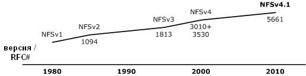
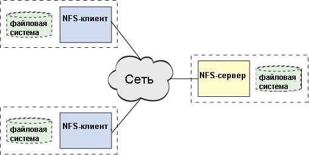
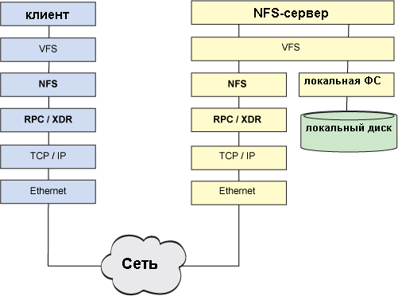
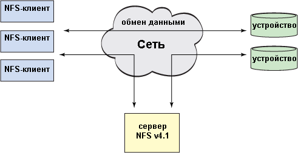

Сетевая файловая система – это сетевая абстракция поверх обычной файловой системы, позволяющая удаленному клиенту обращаться к ней через сеть так же, как и при доступе к локальным файловым системам. Хотя NFS не является первой сетевой системой, она сегодня развилась до уровня наиболее функциональной и востребованной сетевой файловой системы в UNIX®. NFS позволяет организовать совместный доступ к общей файловой системе для множества пользователей и обеспечить централизацию данных для минимизации дискового пространства, необходимого для их хранения.
Эта статья начинается с краткого обзора истории NFS, а затем переходит к исследованию архитектуры NFS и путей её дальнейшего развития.
Первая сетевая файловая система называлась FAL (File Access Listener - обработчик доступа к файлам) и была разработана в 1976 году компанией DEC (Digital Equipment Corporation). Она являлась реализацией протокола DAP (Data Access Protocol – протокол доступа к данным) и входила в пакет протоколов DECnet. Как и в случае с TCP/IP, компания DEC опубликовала спецификации своих сетевых протоколов, включая протокол DAP.
NFS была первой современной сетевой файловой системой, построенной поверх протокола IP. Её прообразом можно считать экспериментальную файловую систему, разработанную в Sun Microsystems в начале 80-х годов. Учитывая популярность этого решения, протокол NFS был представлен в качестве спецификации RFC и впоследствии развился в NFSv2. NFS быстро утвердилась в качестве стандарта благодаря способности взаимодействовать с другими клиентами и серверами.
Впоследствии стандарт был обновлен до версии NFSv3, определенной в RFC 1813. Эта версия протокола была более масштабируема, чем предыдущие, и поддерживала файлы большего размера (более 2 ГБ), асинхронную запись и TCP в качестве транспортного протокола. NFSv3 задала направление развития файловых систем для глобальных (WAN) сетей. В 2000 году в рамках спецификации RFC 3010 (переработанной в версии RFC 3530) NFS была перенесена в корпоративную среду. Sun представила более защищенную NFSv4 c поддержкой сохранения состояния (stateful) (предыдущие версии NFS не поддерживали сохранение состояния, т.е. относились к категории stateless). На текущий момент последней версией NFS является версия 4.1, определенная в RFC 5661, в которой в протокол посредством расширения pNFS была добавлена поддержка параллельного доступа для распределенных серверов.
История развития NFS, включая конкретные RFC, описывающие её версии, показана на рисунке 1.

Рисунок 1. История развития NFS
Как ни удивительно, NFS находится в стадии разработки уже почти 30 лет. Она является исключительно стабильной и переносимой сетевой файловой системой с выдающимися характеристиками масштабируемости, производительности и качества обслуживания. В условиях увеличения скорости и снижения задержек при обмене данными внутри сети NFS продолжает оставаться популярным способом реализации файловой системы внутри сети. Даже в случае локальных сетей виртуализация побуждает хранить данные в сети, чтобы обеспечить виртуальным машинам дополнительную мобильность. NFS также поддерживает новейшие модели организации вычислительных сред, нацеленные на оптимизацию виртуальных инфраструктур.
NFS использует стандартную архитектурную модель "клиент-сервер" (как показано на рисунке 2). Сервер отвечает за реализацию файловой системы совместного доступа и хранилища, к которому подключаются клиенты. Клиент реализует пользовательский интерфейс к общей файловой системе, смонтированной внутри локального файлового пространства клиента.

Рисунок 2. Реализация модели "клиент-сервер" в архитектуре NFS
В ОС Linux® виртуальный коммутатор файловой системы (virtual file system switch - VFS) предоставляет средства для одновременной поддержки на одном хосте нескольких файловых систем (например, файловой системы ISO 9660 на CD-ROM и файловой системы ext3fs на локальном жестком диске). Виртуальный коммутатор определяет, к какому накопителю выполняется запрос, и, следовательно, какая файловая система должна использоваться для обработки запроса. Поэтому NFS обладает такой же совместимостью, как и другие файловые системы, применяющиеся в Linux. Единственное отличие NFS состоит в том, что запросы ввода/вывода вместо локальной обработки на хосте могут быть направлены для выполнения в сеть.
VFS определяет, что полученный запрос относится к NFS, и передает его в обработчик NFS, находящийся в ядре. Обработчик NFS обрабатывает запрос ввода/вывода и транслирует его в NFS-процедуру (OPEN, ACCESS, CREATE, READ,CLOSE, REMOVE и т.д.). Эти процедуры, описанные в отдельной спецификации RFC, определяют поведение протокола NFS. Необходимая процедура выбирается в зависимости от запроса и выполняется с помощью технологии RPC (вызов удаленной процедуры). Как можно понять по названию, RPC позволяет осуществлять вызовы процедур между различными системами. RPC-служба соединяет NFS-запрос с его аргументами и отправляет результат на соответствующий удаленный хост, а затем следит за получением и обработкой ответа, чтобы вернуть его инициатору запроса.
Также RPC включает в себя важный уровень XDR (external data representation – независимое представление данных), гарантирующий, что все пользователи NFS для одинаковых типов данных используют один и тот же формат. Когда некая платформа отправляет запрос, используемый ею тип данных может отличаться от типа данных, используемого на хосте, обрабатывающего этот запрос. Технология XDR берет на себя работу по преобразованию типов в стандартное представление (XDR), так что платформы, использующие разные архитектуры, могут взаимодействовать и совместно использовать файловые системы. В XDR определен битовый формат для таких типов, как float, и порядок байтов для таких типов, как массивы постоянной и переменной длины. Хотя XDR в основном известна благодаря применению в NFS, это спецификация может быть полезна во всех случаях, когда приходится работать в одной среде с различными архитектурами.
После того как XDR переведет данные в стандартное представление, запрос передается по сети с помощью определенного транспортного протокола. В ранних реализациях NFS использовался протокол UDP, но сегодня для обеспечения большей надежности применяется протокол TCP.
На стороне NFS-сервера применяется схожий алгоритм. Запрос поднимается по сетевому стеку через уровень RPC/XDR (для преобразования типов данных в соответствии с архитектурой сервера) и попадает в NFS-сервер, который отвечает за обработку запроса. Там запрос передается NFS-демону для определения целевой файловой системы, которой он адресован, а затем снова поступает в VFS для обращения к этой файловой системе на локальном диске. Полностью схема этого процесса приведена на рисунке 3. При этом локальная файловая система сервера – это стандартная для Linux файловая система, например, ext4fs. По сути NFS – это не файловая система в традиционном понимании этого термина, а протокол удаленного доступа к файловым системам.

Рисунок 3. Схема взаимодействия между NFS-клиентом и NFS-сервером
Для сетей с большим временем ожидания в NFSv4 предлагается специальная составная процедура (compound procedure). Эта процедура позволяет поместить несколько RPC-вызовов внутрь одного запроса, чтобы минимизировать затраты на передачу запросов по сети. Также в этой процедуре реализован механизм callback-функций для получения ответов.
Когда клиент начинает работать с NFS, первым действием выполняется операция mount, которая представляет собой монтирование удаленной файловой системы в пространство локальной файловой системы. Этот процесс начинается с вызова процедуры mount (одной из системных функций Linux), который через VFS перенаправляется в NFS-компонент. Затем с помощью RPC-вызова функции get_port на удаленном сервере определяется номер порта, который будет использоваться для монтирования, и клиент через RPC отправляет запрос на монтирование. Этот запрос на стороне сервера обрабатывается специальным демоном rpc.mountd, отвечающим за протокол монтирования (mount protocol). Демон проверяет, что запрошенная клиентом файловая система имеется в списке систем, доступных на данном сервере. Если запрошенная система существует и клиент имеет к ней доступ, то в ответе RPC-процедуры mount указывается дескриптор файловой системы. Клиент сохраняет у себя информацию о локальной и удаленной точках монтирования и получает возможность осуществлять запросы ввода/вывода. Протокол монтирования не является безупречным с точки зрения безопасности, поэтому в NFSv4 вместо него используются внутренние RPC-вызовы, которые также могут управлять точками монтирования.
Для считывания файла его необходимо сначала открыть. В RPC нет процедуры OPEN, вместо этого клиент просто проверяет, что указанные файл и каталог существуют в смонтированной файловой системе. Клиент начинает с выполнения RPC-запроса GETATTR к каталогу, в ответ на который возвращаются атрибуты каталога или индикатор, что каталог не существует. Далее, чтобы проверить наличие файла, клиент выполняет RPC-запрос LOOKUP. Если файл существует, для него выполняется RPC-запрос GETATTR, чтобы узнать атрибуты файла. Используя информацию, полученную в результате успешных вызовов LOOKUP и GETATTR, клиент создает дескриптор файла, который предоставляется пользователю для выполнения будущих запросов.
После того как файл идентифицирован в удаленной файловой системе, клиент может выполнять RPC-запросы типаREAD. Этот запрос состоит из дескриптора файла, состояния, смещения и количества байт, которое следует считать. Клиент использует состояние (state), чтобы определить может ли операция быть выполнена в данный момент, т.е. не заблокирован ли файл. Смещение (offset) указывает, с какой позиции следует начать чтение, а счетчик байт (count) определяет, сколько байт необходимо считать. В результате RPC-вызова READ сервер не всегда возвращает столько байт, сколько было запрошено, но вместе с возвращаемыми данными всегда передает, сколько байт было отправлено клиенту.
Наибольший интерес представляют две последние версии NFS – 4 и 4.1, на примере которых можно изучить наиболее важные аспекты эволюции технологии NFS.
До появления NFSv4 для выполнения таких задач по управлению файлами, как монтирование, блокировка и т.д. существовали специальные дополнительные протоколы. В NFSv4 процесс управления файлами был упрощен до одного протокола; кроме того, начиная с этой версии UDP больше не используется в качестве транспортного протокола. NFSv4 включает поддержку UNIX и Windows®-семантики доступа к файлам, что позволяет NFS "естественным" способом интегрироваться в другие операционные системы.
В NFSv4.1 для большей масштабируемости и производительности была введена концепция параллельной NFS (parallel NFS - pNFS). Чтобы обеспечить больший уровень масштабируемости, в NFSv4.1 реализована архитектура, в которой данные и метаданные (разметка) распределяются по устройствам аналогично тому, как это делается в кластерных файловых системах. Как показано на рисунке 4, pNFS разделяет экосистему на три составляющие: клиент, сервер и хранилище. При этом появляются два канала: один для передачи данных, а другой для передачи команд управления. pNFS отделяет данные от описывающих их метаданных, обеспечивая двухканальную архитектуру. Когда клиент хочет получить доступ к файлу, сервер отправляет ему метаданные с "разметкой". В метаданных содержится информация о размещении файла на запоминающих устройствах. Получив эту информацию, клиент может обращаться напрямую к хранилищу без необходимости взаимодействовать с сервером, что способствует повышению масштабируемости и производительности. Когда клиент заканчивает работу с файлом, он подтверждает изменения, внесенные в файл и его "разметку". При необходимости сервер может запросить у клиента метаданные с разметкой.
С появлением pNFS в протокол NFS было добавлено несколько новых операций для поддержки такого механизма. Метод LayoutGet используется для получения метаданных с сервера, метод LayoutReturn "освобождает" метаданные, "захваченные" клиентом, а метод LayoutCommit загружает "разметку", полученную от клиента, в хранилище, так что она становится доступной другим пользователям. Сервер может отозвать метаданные у клиента с помощью методаLayoutRecall. Метаданные с "разметкой" распределяются между несколькими запоминающими устройствами, чтобы обеспечить параллельный доступ и высокую производительность.

Рисунок 4. Архитектура pNFS в NFS версии 4.1
Данные и метаданные хранятся на запоминающих устройствах. Клиенты могут выполнять прямые запросы ввода/вывода на основе полученной разметки, а сервер NFSv4.1 хранит метаданные и управляет ими. Сама по себе эта функциональность и не нова, но в pNFS была добавлена поддержка различных методов доступа к запоминающим устройствам. Сегодня pNFS поддерживает использование блочных протоколов (Fibre Channel), объектных протоколов и собственно NFS (даже не в pNFS-форме).
Развитие NFS продолжается, и в сентябре 2010 года были опубликованы требования к NFSv4.2. Некоторые из нововведений связаны с наблюдающейся миграцией технологий хранения данных в сторону виртуализации. Например, в виртуальных средах с гипервизором весьма вероятно возникновение дублирования данных (несколько ОС выполняют чтение/запись и кэширование одних и тех же данных). В связи с этим желательно, чтобы система хранения данных в целом понимала, где происходит дублирование. Такой подход поможет сэкономить пространство в кэше клиента и общую емкость системы хранения. В NFSv4.2 для решения этой проблемы предлагается использовать "карту блоков, находящихся в совместном доступе" (block map of shared blocks). Поскольку современные системы хранения все чаще оснащаются собственными внутренними вычислительными мощностями, вводится копирование на стороне сервера, позволяющее снизить нагрузку при копировании данных во внутренней сети, когда это можно эффективно делать на самом запоминающем устройстве. Другие инновации включают в себя субфайловое кэширование для флэш-памяти и рекомендации по настройке ввода-вывода на стороне клиента (например, с использованием mapadvise).
Хотя NFS – самая популярная сетевая файловая система в UNIX и Linux, кроме нее существуют и другие сетевые файловые системы. На платформе Windows® чаще всего применяется SMB, также известная как CIFS; при этом ОС Windows также поддерживает NFS, равно как и Linux поддерживает SMB.
Одна из новейших распределенных файловых систем, поддерживаемых в Linux - Ceph - изначально спроектирована как отказоустойчивая POSIX-совместимая файловая система. Дополнительную информацию о Ceph можно найти в разделеРесурсы.
Стоит также упомянуть файловые системы OpenAFS (Open Source-версия распределенной файловой системы Andrew, разработанной в университете Карнеги-Меллона и корпорации IBM), GlusterFS (распределенная файловая система общего назначения для организации масштабируемых хранилищ данных) и Lustre (сетевая файловая система с массовым параллелизмом для кластерных решений). Все эти системы с открытым исходным кодом можно использовать для построения распределенных хранилищ.
Развитие файловой системы NFS продолжается. Подобно ОС Linux, подходящей для поддержки и бюджетных, и встраиваемых, и высокопроизводительных решений, NFS предоставляет архитектуру масштабируемых решений для хранения данных, подходящих как отдельным пользователям, так и организациям. Если посмотреть на путь, уже пройденный NFS, и перспективы её дальнейшего развития, становится понятно, что эта файловая система будет продолжать изменять наши взгляды на то, как реализуются и используются технологии хранения файлов.